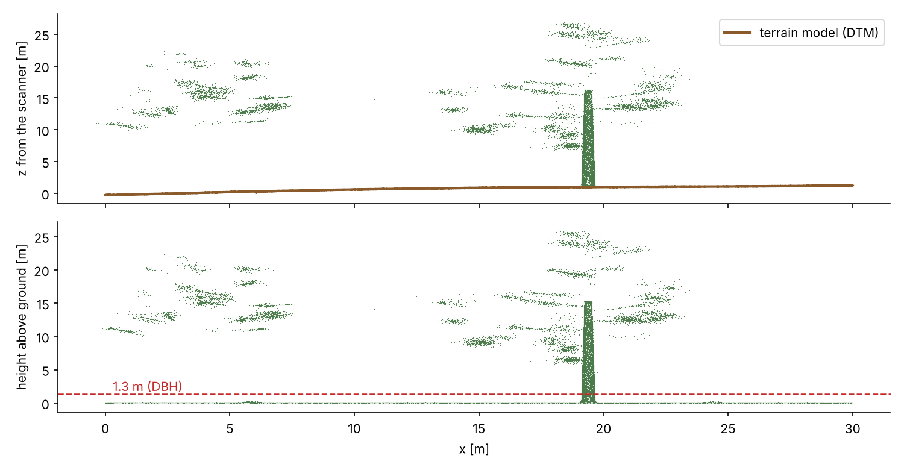
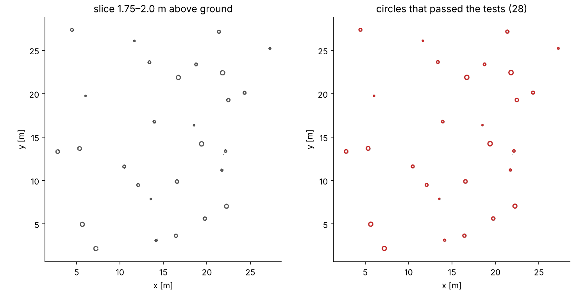
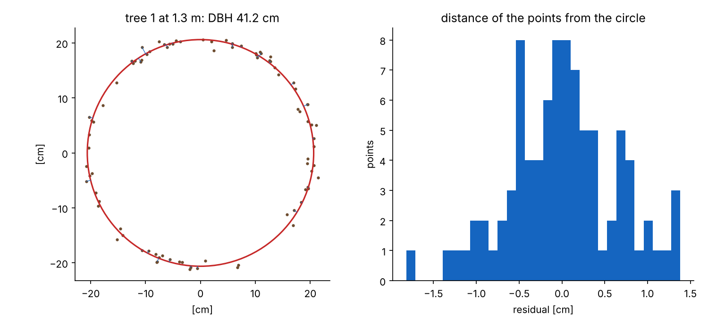
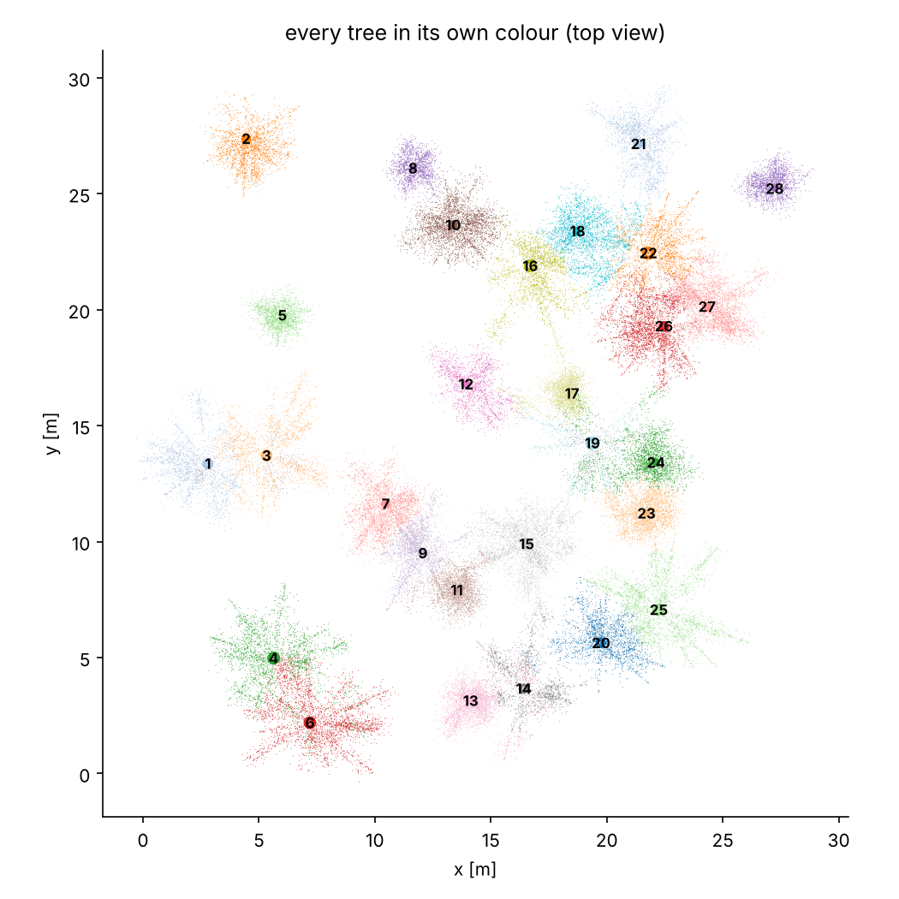
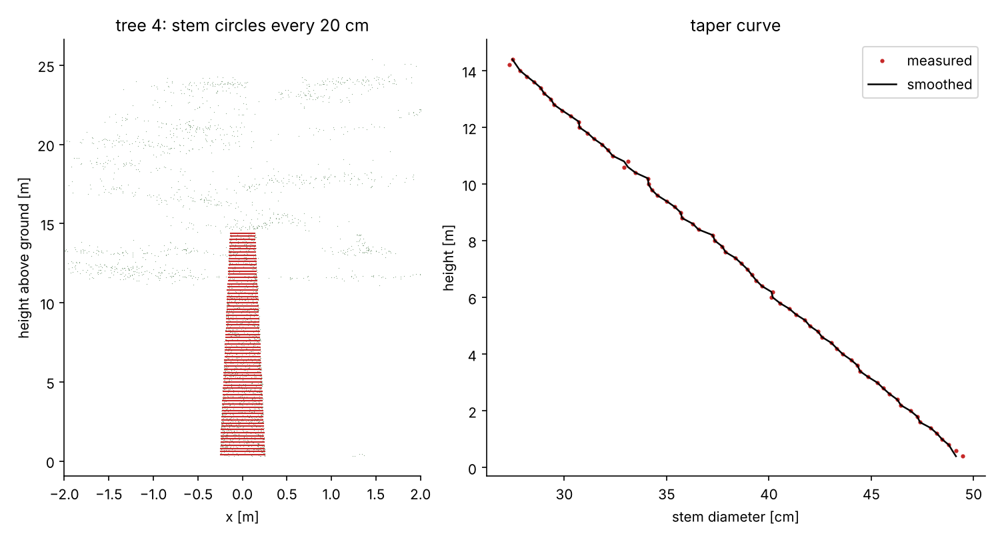
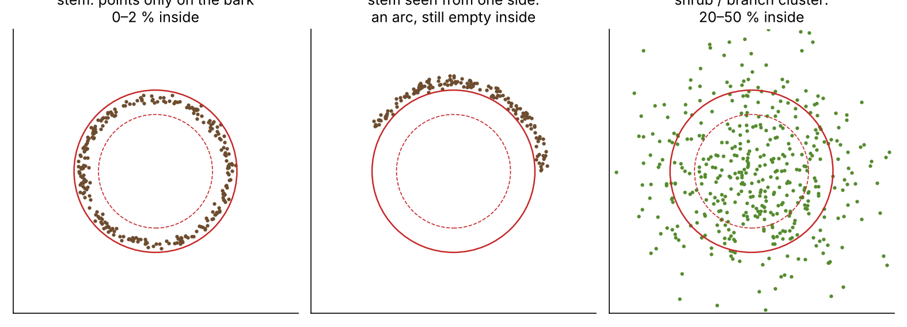
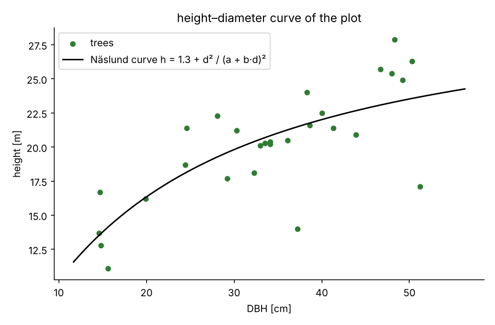

This document describes the program as it is in the code. Where something is a simplification or has not been verified yet, it says so plainly. The figures were made on the synthetic test plot that ships with the program (tree_segmenter_tool/90_make_test_forest.py, 28 trees); the accuracy figures in chapter 11 come from real mobile laser scans of mountain spruce and beech stands.
How to use the program step by step is in the User manual (docs/user_manual.pdf).
LidarTreeSegmenter takes a point cloud from a laser scanner (a .laz or .las file) and does with it what a forester does with a tape, a caliper and a height meter: it finds the trees, measures their DBH and height, computes basal area and volume, and finally assembles a stand report. In addition it splits every tree into stem, branches and foliage, tells shrubs and snags apart from healthy trees, removes objects that have no real stem, and, when you have a few trees measured with GPS, moves the whole scan into real-world coordinates.
The program works in three stages. Each stage is a separate file in the program folder and each saves its results, so the next one can use them, and the report can be recomputed without processing the cloud again.
05_wykryj_drzewa.py + tree_segmenter_tool10_pien_galezie_liscie.py30_raport.py40_widok_3d.py| Word | Meaning |
|---|---|
| LiDAR, laser scanner | A device that sends laser pulses and measures how long they take to return. From the time and direction it computes the position of the reflection point (x, y, z). |
| MLS, TLS | Mobile scanning (you walk with the scanner) and terrestrial scanning from a tripod. With MLS the scanner sees trees from many sides, but not always all around. |
| Point cloud | A set of millions of points (x, y, z). In the program it is a table with N rows and 3 columns. |
| .las / .laz | Point cloud file format; .laz is the compressed version. Besides x, y, z the file may have extra fields, e.g. a tree number. |
| Voxel | A cube in space (a 3D pixel). Dividing the cloud into voxels and keeping one point per cube makes the cloud lighter. |
| Slice | A thin horizontal layer of the cloud, e.g. 1.25–1.35 m above ground. In a slice a stem looks like a circle or an arc from above. |
| DTM (terrain model) | The ground surface. The height above ground of every point is measured from it. |
| Neighbours (k nearest) | The k points closest to a given point. They are found quickly with a k-d tree. |
| Angular coverage | How much of the stem circumference the scanner saw, in degrees (360° = the whole circumference). |
| Hollowness | The share of points near the circle that lie away from its centre. A stem is empty inside (the laser reflects from the bark), a shrub is not. |
| Circle chain | Circles from successive slices stacked above each other, i.e. a piece of stem. |
| Graph | Points connected by edges to their neighbours, like a road network. It allows computing a “distance along the cloud”. |
| Random forest | A machine learning method: many simple decision trees vote on whether a point is wood or leaf. |
| DBH (D1.3) | Stem diameter at 1.3 m. |
| Slenderness h/d | Height divided by DBH (in the same units). A healthy spruce usually has 50–100. |
| Snag | A broken tree: thick stem, low height. |
| Understory | Shrubs and regeneration near the ground that are not part of the measured tree. |
Stage 1 runs tree_segmenter_tool/02_detect_trees.py with settings chosen by LidarTreeSegmenter, and runs the stem search a second time, higher up. The steps appear in the log as [KROK 1], [KROK 2] and so on (krok = step).
The program reads the file and turns it into a table of coordinates in metres. A mobile scanner produces very many points in one place (close to its path), so the cloud is thinned first: space is divided into 1 cm cubes and one point is kept from each. The shape of the trees does not change and the computation becomes faster.
VOXEL_WEJSCIOWY = 0.01 m. Source: Rusu and Cousins 2011 (PCL library).Noise means single points “in the air”: reflections from dust, droplets, measurement errors. For each point the program computes the mean distance to its 12 nearest neighbours. A point in a dense crown has neighbours close by, a ghost point far away. Points whose mean distance is larger than the mean of the whole cloud plus 2.5 standard deviations are removed (typically about 3 % of points).
SOR_SASIEDZI = 12, SOR_PROG_ODCHYLEN = 2.5 σ. Neighbours are found with a k-d tree (scipy.spatial.cKDTree), which divides space into boxes so that not every point has to be compared with every other. The code warns that a too strict threshold (e.g. 1.5) “eats” tree tops and lowers heights. Sources: Rusu et al. 2008 (SOR), Bentley 1975 (k-d tree).The terrain is divided into 0.5 × 0.5 m squares, and in each the lowest point is taken as a ground candidate. Sometimes the scanner did not see the ground in a square and the “lowest point” is on a branch. So the program joins neighbouring squares if their heights differ by at most 40 cm and keeps only the largest connected “island”: that is the ground. It also rejects squares half a metre higher than the median of their 9 neighbours (logs, mounds, shrubs).

scipy.sparse.csgraph.connected_components (Hopcroft and Tarjan 1973). Parameters: cell 0.5 m, step between cells 0.40 m (with a 0.5 m cell that is a slope of up to 80 %), difference from neighbours 0.5 m.Under every point the program computes the ground height by interpolating between the terrain model points (Delaunay triangles, value weighted by position in the triangle) and subtracts it from z. At the plot edges, where there are no triangles, it takes the height of the nearest ground point. Trees more than 4 m from visible ground get a note that their height is uncertain.
scipy.interpolate.griddata(method="linear"), using the Qhull library underneath (Barber et al. 1996, Delaunay 1934).This is the most important step of stage 1. The program cuts a band from 0.5 to 6 m above ground and looks for stems in it in four sub-steps.
a) Only vertical surfaces remain. For each point the program takes 20 neighbours and checks how the surface they lie on is oriented (principal component analysis, PCA). Stem bark is a vertical wall, leaves and branches lie any way. Points whose surface is nearly vertical (vertical component of the normal below 0.25) are kept.
b) Circles in each slice. The band is divided into 25 cm slices. In each slice the vertical-surface points are grouped with DBSCAN: points lying densely next to each other form a group, isolated points are rejected. The program fits a circle to every group and checks three things: whether the circle fits the points well (error up to 4 cm), whether at least 90° of the circumference is visible, and whether the centre is empty (at least 80 % of points lie farther than 0.7 radius from the centre).


c) Joining circles into chains. Going from the bottom up, the program attaches a circle to a chain if it lies above it (shift at most 25 cm per slice, allowed gap up to 3 slices) and has a similar radius (change up to 50 %). A chain is a stem. A chain shorter than 6 links (1.5 m) is not accepted as a tree.
d) Re-measurement along the stem axis and DBH. Through the circle centres of the chain the program fits a straight line, the stem axis. Every slice is measured again, but only from points closer than 60 cm to the axis, with RANSAC: 500 times it draws three points, puts a circle through them and counts how many points lie on it (±2 cm), minus a penalty for points inside. The circle centre must lie at most 8 cm from the axis. According to tests recorded in the code this reduced DBH overestimation from +12 cm to +2.6 cm. Chains ending above 1.6 m are extended down to 1.0 m by prolonging the axis and radius.
The DBH is the radius read at 1.3 m from a line fitted to the circles between 0.8 and 3.5 m, times two. A leaning stem (more than 5°) gets a small correction, because the horizontal section of a leaning cylinder is an ellipse. When the chain does not cover 1.3 m (±0.3 m), the DBH stays empty: extending downwards is deliberately switched off, because on a test plot it gave an error of 5.5–11.5 cm instead of 2.8 cm with a normal measurement.
LidarTreeSegmenter runs this step a second time, higher, from 2.5 to 8.5 m. A stem found only higher up that does not overlap any earlier one is added as a new tree (“detected from above”). This helps in dense understory.
Once the stems are found, every crown point has to be told which tree it belongs to. The simplest method (nearest stem from above) cuts crowns vertically and overhanging branches go to the neighbour. So the program uses a graph: the cloud is thinned to 30 cm voxels, every voxel is connected to its 20 nearest neighbours (edges up to 1 m), and then for every voxel the shortest path “along the cloud” to some stem is computed. A step sideways costs twice as much as a vertical step, so the path prefers to go down a branch to its own stem rather than jump to a neighbour.

GRAF_ROZMIAR_VOXELA = 0.30 m, GRAF_SASIEDZI = 20, GRAF_MAX_DLUGOSC_KRAWEDZI = 1.0 m, GRAF_KARA_POZIOMA = 4. In tests recorded in the code this reduced the height error (RMSE) from 3.32 m to 1.06 m compared with the nearest-stem method. Sources: Dijkstra 1959; similar approaches: Tao et al. 2015, Wang 2020.Tree height is the highest point assigned to the tree, above ground. The program also flags probably dead trees (almost no points in the upper 40 % of the height) and stems that join below 0.5 m (forks). These are hints; they do not remove anything.
Trees with slenderness h/d below 25 (e.g. 5 m height with 40 cm DBH) are put in a separate table odrzucone_smuklosc.csv, because on four test plots these were almost always errors. Other filters (upper slenderness, “stem wall”, taper) are off, because they rejected real trees. Finally the cloud with a tree number for every point (_segmenty.laz) and the tree table are saved. The plot area is the number of 25 × 25 cm squares containing any point (overestimates by about 2 % at the edge).
Stage 2 takes each tree separately and splits it into parts in more detail. The result is a cloud with the field czesc (1 stem, 2 branches, 3 foliage, 4 understory), a table of stem cross-sections every 20 cm, an image of every tree and a GeoPackage.
Stage 1 only looked at the band 0.5–6 m. Now the program looks for the stem of each tree from several starting heights (1, 2, 3, 4, 5 and 6.5 m) and from each start goes up and down with circles every 20 cm, predicting the position of the next circle from the previous ones. The longest consistent chain wins. If the stem base is more than 35 % thicker than the taper higher up suggests, a shrub has stuck to the stem; such a section is cut out. The missing base is then reconstructed: axis and diameter are extended downwards (the stem gets 0–1.5 cm of radius thicker per metre downwards). Reconstructed circles are blue on the images and have a blue background in Excel.

The tree cloud is thinned to 2.5 cm voxels. For every voxel the program takes its neighbours (12, then 40) and checks what shape they form: a line (branch), a plane (bark seen from close) or a ball (needles, leaves). Numerically this is PCA: the spread of the points gives three numbers λ1 ≥ λ2 ≥ λ3 (like length, width and thickness of the little cloud).
Then the program creates its own training examples: wood is stem voxels and clear lines (linearity above 0.8 at both scales), leaves are clear balls (scattering above 0.15) farther than 0.5 m from the stem. On these examples it trains a random forest (80 decision trees) and asks it about all the other voxels. The result is a wood probability p_drewno: above 0.5 a branch, below foliage. The distance from the stem is not given to the model, so that it does not learn the trivial rule “close to the stem = wood”.

RandomForestClassifier, 80 trees, depth up to 14). Training on automatically chosen examples is self-training (Yarowsky 1995), here in one round. Similar methods: Krishna Moorthy et al. 2020, Wang et al. 2020 (LeWoS), Vicari et al. 2019.Small pieces of “wood” floating in the crown, not connected to the stem (fewer than 25 voxels, about 60 cm of twig), are changed to foliage. The program joins neighbouring wood voxels into groups (connected components of a graph) and checks the size of each group.
A stem in cross-section is empty inside, because the laser reflects from the bark. A shrub or a cluster of branches has points inside too. At 1.3 m and again at 3 m the program computes the share of points near the circle that lie closer to the centre than 0.7 radius. Stems have 0–2 % such points, shrubs 20–50 %.

| Situation | Result | Next |
|---|---|---|
| Low (below 15 m) and very thick (h/d below 20), stem clearly hollow at 1.3 and 3 m | snag | stays in the results; volume = volume of the measured stem, not the formula |
| Low and very thick, stem not hollow | shrub (stump, cluster) | left out of totals |
| Points inside at both heights and lower than 5 m (young) / 10 m (mature) | shrub | left out of totals |
| Many points inside, but the tree is tall | uncertain | stays in the results with a note |
| Stem hollow | ok | – |
These are the program's own rules (thresholds: hollow below 15 % of points inside, full from 20 %, snag below 8 %). You have the last word in the tree review mode of the 3D view. In stage 3 a stricter cylinder check follows (chapter 5).
Branch and leaf points of a tree that lie low (up to 1.5 m in a young stand, up to 3 m in a mature one) and farther from the stem than 0.6 m / 1 m are shrubs near the stem, not branches of the tree. They get a separate class “understory”.
The stage 1 segmentation assigns every vegetation point to some tree, so shrubs were not separate objects, only understory points near trees. The module lts_krzewy.py (run in stage 3, so it works after “Recalculate report”) turns them into countable shrubs:
03_TABELE\<scan>_krzewy.csv and the grid _krzewy.npz (used by the 3D view to colour points).The thresholds were set on one plot and should be checked on others.
When stems stand right next to each other or are fused at the base, the stage 1 segmentation merges them into one tree. Before stem tracking, stage 2 does the following for each tree:
Tracking has a random element (RANSAC), so each tree gets up to 3 attempts with a seed derived from the tree number, which makes the result repeatable. Stage 2 takes about 3–4 minutes longer because of this. Limitations: crowns are split only along the extended axes, so the boundary in the crown is approximate; a second stem hidden in dense understory along its whole length will not be found. Output: 03_TABELE\<scan>_rozdzielone.csv; to switch off: option --bez-rozdzielania.
From the shape the program estimates whether a tree is coniferous (spruce) or broadleaved (beech). It weighs four features: how high the straight stem reaches relative to the tree height (50 %), how narrow the top is (20 %), where the crown's centre of mass is (15 %) and the ratio of crown width to length (15 %). Trees lower than 8 m and ambiguous ones stay “unspecified”. These are rules without learning, and in a dense stand crowns overlap, so in the window you can choose “spruce only” or “beech only”.
Scanner tags. A handheld scanner records the time, the chosen code and its own position in the cloud's coordinates each time the marker button is pressed (file markPoint.csv in the raw session folder). In tests most tags lay 0.05–0.25 m from a stem found in stage 1, so the tag position is practically the tree position. The module lts_etykiety.py assigns each tag to the nearest stem closer than 1 m. When one tree has two tags, the later one wins (treated as a correction). When a plot has several sessions (several folders, each possibly with its own coordinate system), the session whose tags most often hit stems is used, and a session hitting less than half is rejected. Codes: FI spruce, BU beech, TA fir, KI pine, LA larch, EI oak, AH sycamore, ES ash, KR cherry, UL elm, taxus yew.
Stage 1 sometimes reports a “tree” where there is none: a cluster of branches, a shrub or a piece of a neighbour's crown that happened to produce a few circle-like arcs. The module lts_walec.py (walec = cylinder) checks every tree against all scan points, not only those assigned to the tree. A stem is a cylinder: a straight, nearly vertical axis, a constant or gently decreasing radius, points on the bark and nothing inside.
For each tree the program takes all points within 0.7 m of the stem position at 0.6–3.0 m above ground and:
Result: stem (cylinder confirmed), no stem (the tree is rejected and not included in totals) or uncertain (stays, with a note), plus a DBH from the cylinder at 1.3 m. When two reported trees turn out to stand on the same cylinder, the duplicate is marked. The verdicts are saved in 03_TABELE\<scan>_kontrola_walca.csv and computed again only when the inputs change. On a real scan of a dense stand this check removed the false trees that the previous version still counted; on the synthetic test plot all 28 trees were confirmed as stems.
DBH is measured by two independent methods: stage 1 (band 0.5–6 m) and stage 2 (tracking the whole stem). The report chooses in this order:
In a stand, height increases with DBH in a predictable way. The program fits the Näslund curve h = 1.3 + d² / (a + b·d)² to the trees for which both methods give the same DBH (±15 %), at least 8 trees. When the methods disagree, the DBH that fits the curve better (by at least 2 m) wins. A tree whose DBH does not fit its height at all (deviation above 6 m or 2.5 times the curve error) gets the note “check the image”.

scipy.optimize.curve_fit. Sources: Näslund 1936; Levenberg 1944; Marquardt 1963.The merchantable volume of a tree is computed with the formula V = g · h · f, where g = π·d²/4 is the cross-section area at 1.3 m, h the height and f the breast-height form factor (what part of a cylinder with cross-section g and height h is merchantable wood). The values in tablice_miazszosci.csv: spruce 0.47, beech 0.51, unspecified 0.47, coniferous 0.45, broadleaved 0.50 (the last two for species without their own row, e.g. larch or sycamore). These are approximate values; you can replace the file with regional tables, also with a power formula V = a·db·hc.
A second number, “volume of the measured stem section”, is the sum of truncated cones between consecutive stem cross-sections every 20 cm: the volume of the part of the stem the scanner really saw (without the top). It is used as a check, and for snags it replaces the formula, because the formula with height would overestimate. Truncated cone between cross-sections with areas A1 and A2, Δh apart: V = Δh · (A1 + A2 + √(A1·A2)) / 3.
| Indicator | How it is computed |
|---|---|
| N/ha | number of trees (without shrubs) / area in ha |
| Dg, quadratic mean DBH | √(mean of d²): diameter of the tree with the mean basal area |
| Lorey's height | Σ(g·h) / Σg: mean height weighted by basal area (thicker trees weigh more) |
| G/ha | sum of cross-section areas / area |
| V/ha | sum of volumes / area |
| DBH distribution | 4 cm diameter classes: number of trees, N/ha, G/ha, V/ha |
The scanner does not know where north is or where on the map it stood. If you measure a few trees in the field (position from GPS and DBH with a tape), the program finds them in the scan and rotates and shifts the scan into real coordinates.
A test with 5 trees and 40 random trials at different GPS errors: with a 2 m error and trees spread 6–14 m from the centre the rotation was correct (error below 15°) in 39 of 40 trials, median error 3.5°. With trees clustered near the centre: 32 of 40. With a 5 m GPS error: 12 and 6 of 40 respectively. Therefore: average the GPS position and choose trees that are spread out and have different DBH.
A handheld (SLAM) scanner computes its position at every moment and saves it as a path (trajectory): a series of x, y, z points, often with time. The path is in the same coordinate system as the cloud, because the cloud is built from these positions. The program does not need it, but when it is there, it knows from where every tree was seen.
lts_sciezka.py): first the file chosen in the window, then 01_RAPORT\<scan>_sciezka.*, then files with traj, sciezka, path, odom, pose, track in the name and with the scan code (from _N0h__r25 the code is n0h), next to the scan and one folder up.x, px, pos_x, easting, field.pose.pose.position.x and others). Without a header: 12 columns is the KITTI format (3×4 matrix, position in columns 4, 8 and 12), an increasing first column is time (TUM format), otherwise the first three columns are x y z.For every stem the program computes the smallest horizontal distance to the path and the coverage: it divides the circle around the stem into 36 sectors of 10° and marks a sector if any path point lies in that direction closer than 15 m. Coverage is the percentage of marked sectors. A tree passed on one side has about 30–50 %, a tree walked around 100 %.
Why: a DBH from a circle fitted to an arc seen from one side only is less certain (a 90° arc allows many different circles), and points far from the scanner are noisier. Trees farther than 12 m from the path are counted separately in the summary. The program does not remove them automatically, because with good visibility they may be measured well. It is information for the tree review.
lts_dtm.py). Holes up to 1 m are filled from the nearest cell (distance transform).odl_od_okregu_cm) is |distance of the point from the centre − radius|. Bark points usually have 0–2 cm; many points a few centimetres from the circle mean a branch, a shrub at the stem or an irregular stem.layer_styles table (the standard QGIS way of a default style in a GeoPackage) as QML text. Trees: categories by species, size max(1.4; DBH/18) mm. Contours: rules by the field glowna. Slice points: visible only from scale 1:400. Rasters: elevation and slope with a colour ramp..gpkg, so it works after moving the whole folder. The map extent is the extent of trees and crowns plus 3 m.The 3D view gets the path simplified to a point every 0.25 m. For every 1 m cell of the cloud the program finds the first path point closer than 10 m (k-d tree) and orders the cloud points in that sequence. The browser then shows only the beginning of the point array, longer and longer as the scanner moves, so the animation is smooth even with 600,000 points. This is a simplification: a real scanner sees farther than 10 m, but sees hidden places later, so 10 m reflects the scanning order well.
| Algorithm | Where | What for | Source |
|---|---|---|---|
| Voxel grid | stage 1 step 1, stage 2, graph, slice points in GeoPackage | thinning the cloud | Rusu and Cousins 2011 |
| Statistical Outlier Removal (SOR) | stage 1 step 2 | noise removal | Rusu et al. 2008 |
| k-d tree | everywhere | fast neighbour search | Bentley 1975 |
| Grid minimum + connected components | stage 1 step 3 | terrain model | own; Hopcroft and Tarjan 1973 |
| Interpolation on a Delaunay triangulation | stage 1 step 4 | height above ground | Delaunay 1934; Barber et al. 1996 |
| PCA (normals, eigenvalue features) | stage 1 step 5, stage 2 step 3 | vertical stem walls; neighbourhood shape | Hoppe et al. 1992; Demantké et al. 2011; Weinmann et al. 2015 |
| DBSCAN | stage 1 step 5, stage 2 step 2 | grouping points in a slice | Ester et al. 1996 |
| Kåsa circle fit | stages 1 and 2 | stem diameter | Kåsa 1976 |
| RANSAC (with centre penalty and axis anchor) | stages 1, 2 and 3 | circles robust to branches and shrubs | Fischler and Bolles 1981 |
| Joining circles into chains | stage 1 step 5 | stem from circles | own |
| Cylinder fit to stacked slice circles | stage 3, cylinder check | removing false trees, DBH from the cylinder | own; RANSAC: Fischler and Bolles 1981 |
| Jaccard similarity | stage 1 (“stem wall”) | diagnostics | Jaccard 1912 |
| Multi-source Dijkstra on a k-NN graph | stage 1 step 6 | assigning points to trees | Dijkstra 1959; Tao et al. 2015 |
| Random forest, self-training | stage 2 step 4 | wood or leaf | Breiman 2001; Yarowsky 1995 |
| Connected components | stage 2 step 5 | crown clean-up | Hopcroft and Tarjan 1973 |
| Rules with voting | stage 2 | species group, stem check, understory | own |
| 2D occupancy grid + height layers, morphology, component labelling, split by local maxima | stage 3, shrubs | shrubs as objects | own; morphology: Serra 1982 |
| Second stem tracking after removing the main stem | stage 2, before stem tracking | splitting fused trees | own; RANSAC: Fischler and Bolles 1981 |
| Näslund curve, Levenberg–Marquardt | report | choice of DBH, check | Näslund 1936; Marquardt 1963 |
| V = g·h·f, truncated cones | report | volume | Husch et al. 2003; West 2009 |
| Kabsch, ICP, Krüger series | field measurement | matching and coordinates | Kabsch 1976; Besl and McKay 1992; Krüger 1912 |
| Visibility sectors from the path | scanner path | which side of the stem was seen | own |
| Weighted Gaussian, grid derivatives, marching squares | terrain model | slope, aspect, hillshade, contours | Knutsson and Westin 1993; Horn 1981; Lorensen and Cline 1987 |
| IoU + Hungarian algorithm | method comparison (program 20) | segmentation evaluation | Kuhn 1955 |
The stand class changes several parameters at once. The numbers are in klasy_drzewostanu.csv (open in Excel or Notepad). The “automatic” class changes nothing in stage 1, and in stage 2 chooses the class from the median DBH (below 20 cm: young).
| Parameter | Young | Mature | What it does |
|---|---|---|---|
| Smallest stem diameter | 4.8 cm | 6 cm | thinner circles are not a stem (stage 1) |
| Largest stem diameter | 40 cm | 120 cm | thicker point groups are not a stem (stage 1) |
| DBH threshold in the report | 7 cm | 7 cm | thinner trees are left out of the results |
| Shrub height | 5 m | 10 m | full inside and lower = shrub |
| Understory up to height | 1.5 m | 3.0 m | lower branches away from the stem = understory |
| Understory from distance | 0.6 m | 1.0 m | as above |
| Farthest from the stem (simple method) | 5 m | 8 m | only a fallback when the graph does not work |
| Parameter | Value | Where |
|---|---|---|
| Input voxel | 1 cm | stage 1 step 1 |
| SOR: neighbours, threshold | 12, 2.5 σ | stage 1 step 2 |
| Terrain model cell | 0.5 m | stage 1 step 3 |
| Stem search | 0.5–6 m every 0.25 m, second pass 2.5–8.5 m | stage 1 step 5 |
| Circle: error, coverage, hollowness | ≤ 4 cm, ≥ 90°, ≥ 0.80 | stage 1 step 5 |
| Min. stem length | 6 slices = 1.5 m | stage 1 step 5 |
| Graph: voxel, neighbours, edge, horizontal penalty | 0.3 m, 20, 1 m, ×4 (i.e. ×2 distance) | stage 1 step 6 |
| Min. slenderness | 25 | stage 1 filter |
| Stem cross-sections | every 20 cm | stage 2 |
| Feature voxel, neighbours | 2.5 cm; 12 and 40 | stage 2 |
| Wood threshold | 0.5 | stage 2 |
| Cylinder check: band, slice, search radius | 0.6–3.0 m, 0.25 m, 0.8 m | stage 3 |
| Form factors | spruce 0.47, beech 0.51 | report |
| GPS: position σ, DBH σ | 5 m, 4 cm | field measurement |
The report <scan>_REPORT.xlsx has the sheets Summary, Trees, (Shrubs), (Field measurement), Settings and Explanations. Columns of the Trees sheet:
| Column | Meaning |
|---|---|
| Tree no. | the same number as in the clouds, on the images drzewo_NNN.png and in the 3D view |
| X, Y [m] | stem position in the scan coordinate system |
| DBH D1.3 [cm] | DBH after the choice (chapter 5); g and V are computed from it |
| Tree height H [m] | highest point of the tree above ground |
| Basal area g [m²] | π/4 · D² |
| Merchantable volume V [m³] | formula of the species; for a snag the measured stem |
| Slenderness h/d | height / DBH |
| Distance from scanner path [m] | smallest horizontal distance of the stem from the path (when there is a path file) |
| Path coverage [%] | share of the 36 sectors around the stem in which the path was closer than 15 m |
| Detected from above | “yes”: stem found only in the search at 2.5–8.5 m |
| Reviewed manually | “yes”: your decision from the 3D view |
| Species, Species – source | species for the volume formula and its source: default / detected (preliminary) / whole plot / scanner tag (code) / entered manually / reviewed manually |
| Species group confidence [%] | how clearly the rules pointed to the group |
| Crown base height [m] | height at which the crown begins |
| DBH notes | explanations: uncertain (part of the circumference visible), shrub, snag, no stem, DBH from stage 2, check the image… |
| Stage 2 DBH and its source | the second, independent DBH (measured or reconstructed), for comparison |
| Stem visible from/to, base reconstructed from/to | extent of the measured and reconstructed stem |
| Volume of measured stem section | sum of truncated cones, without the top |
| Stem / Branches / Foliage [% pts] | share of the tree's points in each class |
| Number of points | how many cloud points belong to the tree |
Colours: blue background = value from a reconstructed stem base; yellow = there is a DBH note. Shrubs and objects without a stem are grey below the table and are not included in totals.
A tree counts as found when its points overlap a reference tree by at least half (IoU ≥ 0.5). Recall says how many real trees were found, precision how many of the found ones are real trees. Two manually segmented mobile laser scans of mountain forest were used.
| Plot | Method | F1 | Recall | Precision | Mean IoU |
|---|---|---|---|---|---|
| A (36 trees) | stage 1 (tree_segmenter_tool) | 76.7 | 63.9 % | 95.8 % | 0.81 |
| A | 3DFin (for comparison) | 63.0 | 47.2 % | 94.4 % | 0.79 |
| B (113 trees incl. regeneration) | stage 1 (tree_segmenter_tool) | 61.5 | 53.1 % | 73.2 % | 0.69 |
The program rarely invents trees but misses some real ones; most of the “missed” ones are found, only the crown is mixed with a neighbour (IoU 0.3–0.45). Of the 84 trees taller than 15 m on plot B, 83 % have IoU ≥ 0.3. Regeneration (low trees) is almost not detected (10 %).
Andrew A.M. (1979) Another efficient algorithm for convex hulls in two dimensions. Information Processing Letters 9(5): 216–219.
Barber C.B., Dobkin D.P., Huhdanpaa H. (1996) The Quickhull algorithm for convex hulls. ACM Transactions on Mathematical Software 22(4): 469–483.
Bentley J.L. (1975) Multidimensional binary search trees used for associative searching. Communications of the ACM 18(9): 509–517.
Besl P.J., McKay N.D. (1992) A method for registration of 3-D shapes. IEEE Transactions on Pattern Analysis and Machine Intelligence 14(2): 239–256.
Breiman L. (2001) Random forests. Machine Learning 45(1): 5–32.
Curtis R.O., Marshall D.D. (2000) Why quadratic mean diameter? Western Journal of Applied Forestry 15(3): 137–139.
Danielsson P.-E. (1980) Euclidean distance mapping. Computer Graphics and Image Processing 14(3): 227–248.
Delaunay B. (1934) Sur la sphère vide. Izvestia Akademii Nauk SSSR 7: 793–800.
Demantké J., Mallet C., David N., Vallet B. (2011) Dimensionality based scale selection in 3D lidar point clouds. ISPRS Archives XXXVIII-5/W12.
Dijkstra E.W. (1959) A note on two problems in connexion with graphs. Numerische Mathematik 1: 269–271.
Ester M., Kriegel H.-P., Sander J., Xu X. (1996) A density-based algorithm for discovering clusters in large spatial databases with noise. Proc. KDD-96: 226–231.
Fischler M.A., Bolles R.C. (1981) Random sample consensus. Communications of the ACM 24(6): 381–395.
Hackenberg J., Spiecker H., Calders K., Disney M., Raumonen P. (2015) SimpleTree – an efficient open source tool to build tree models from TLS clouds. Forests 6(11): 4245–4294.
Hopcroft J., Tarjan R. (1973) Algorithm 447: Efficient algorithms for graph manipulation. Communications of the ACM 16(6): 372–378.
Hoppe H., DeRose T., Duchamp T., McDonald J., Stuetzle W. (1992) Surface reconstruction from unorganized points. Computer Graphics 26(2): 71–78.
Horn B.K.P. (1981) Hill shading and the reflectance map. Proceedings of the IEEE 69(1): 14–47.
Husch B., Beers T.W., Kershaw J.A. (2003) Forest Mensuration. 4th ed., Wiley.
Jaccard P. (1912) The distribution of the flora in the alpine zone. New Phytologist 11(2): 37–50.
Kabsch W. (1976) A solution for the best rotation to relate two sets of vectors. Acta Crystallographica A32: 922–923.
Karney C.F.F. (2011) Transverse Mercator with an accuracy of a few nanometers. Journal of Geodesy 85(8): 475–485.
Knutsson H., Westin C.-F. (1993) Normalized and differential convolution. Proceedings CVPR 1993: 515–523.
Krishna Moorthy S.M., Calders K., Vicari M.B., Verbeeck H. (2020) Improved supervised learning-based approach for leaf and wood classification from LiDAR point clouds of forests. IEEE Transactions on Geoscience and Remote Sensing 58(5): 3057–3070.
Krüger L. (1912) Konforme Abbildung des Erdellipsoids in der Ebene. Veröffentlichung des Königlich Preussischen Geodätischen Institutes, N.F. 52.
Kuhn H.W. (1955) The Hungarian method for the assignment problem. Naval Research Logistics Quarterly 2: 83–97.
Kåsa I. (1976) A circle fitting procedure and its error analysis. IEEE Transactions on Instrumentation and Measurement IM-25(1): 8–14.
Levenberg K. (1944) A method for the solution of certain non-linear problems in least squares. Quarterly of Applied Mathematics 2: 164–168.
Lorensen W.E., Cline H.E. (1987) Marching cubes: a high resolution 3D surface construction algorithm. Computer Graphics 21(4): 163–169.
Marquardt D.W. (1963) An algorithm for least-squares estimation of nonlinear parameters. Journal of the Society for Industrial and Applied Mathematics 11(2): 431–441.
Näslund M. (1936) Skogsförsöksanstaltens gallringsförsök i tallskog. Meddelanden från Statens Skogsförsöksanstalt 29.
Raumonen P., Kaasalainen M., Åkerblom M., Kaasalainen S., Kaartinen H., Vastaranta M., Holopainen M., Disney M., Lewis P. (2013) Fast automatic precision tree models from terrestrial laser scanner data. Remote Sensing 5(2): 491–520.
Rusu R.B., Cousins S. (2011) 3D is here: Point Cloud Library (PCL). IEEE ICRA 2011.
Rusu R.B., Marton Z.C., Blodow N., Dolha M., Beetz M. (2008) Towards 3D point cloud based object maps for household environments. Robotics and Autonomous Systems 56(11): 927–941.
Serra J. (1982) Image Analysis and Mathematical Morphology. Academic Press.
Tao S., Wu F., Guo Q. et al. (2015) Segmenting tree crowns from terrestrial and mobile LiDAR data by exploring ecological theories. ISPRS Journal of Photogrammetry and Remote Sensing 110: 66–76.
Umeyama S. (1991) Least-squares estimation of transformation parameters between two point patterns. IEEE TPAMI 13(4): 376–380.
Vicari M.B., Disney M., Wilkes P., Burt A., Calders K., Woodgate W. (2019) Leaf and wood classification framework for terrestrial LiDAR point clouds. Methods in Ecology and Evolution 10(5): 680–694.
Wang D. (2020) Unsupervised semantic and instance segmentation of forest point clouds. ISPRS Journal of Photogrammetry and Remote Sensing 165: 86–97.
Wang D., Momo Takoudjou S., Casella E. (2020) LeWoS: A universal leaf-wood classification method to facilitate the 3D modelling of large tropical trees using terrestrial LiDAR. Methods in Ecology and Evolution 11(3): 376–389.
Weinmann M., Jutzi B., Hinz S., Mallet C. (2015) Semantic point cloud interpretation based on optimal neighborhoods, relevant features and efficient classifiers. ISPRS Journal of Photogrammetry and Remote Sensing 105: 286–304.
West P.W. (2009) Tree and Forest Measurement. 2nd ed., Springer.
Yarowsky D. (1995) Unsupervised word sense disambiguation rivaling supervised methods. Proc. ACL 1995: 189–196.
The references were chosen for the algorithms actually used in the code. The publication details of Näslund 1936, Delaunay 1934 and Tao et al. 2015 are worth checking before citing them in scientific work.